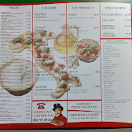

Il nostro menù

Scopri categorie e piatti, con schede informative cliccabili.
Esplora i piattiTradizione e gusto nel cuore di Corbara
Pizza, piatti tipici e un ambiente accogliente per ritrovarsi a tavola.
| Lunedì | Chiuso |
| Martedì | 18:30 – 00:30 |
| Mercoledì | 18:30 – 00:30 |
| Giovedì | 18:30 – 00:30 |
| Venerdì | 18:30 – 00:30 |
| Sabato | 18:30 – 01:00 |
| Domenica | 13:00 – 15:3018:30 – 00:30 |

Scopri categorie e piatti, con schede informative cliccabili.
Esplora i piattiVia Tenente Santolo Lignola 8, 84010 Corbara (SA)
Indicazioni stradaliPer informazioni e prenotazioni puoi chiamare direttamente il ristorante.